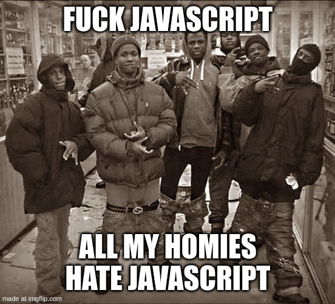

Hello, World!
This is my test of GitHub Pages website to sharpen my HTML skills
This is basically a glorified learning page that you would see at freeCodeCamp but instead of following a guide, I am free-balling it and learning how to use GitHub properly.
I dont really have a good reason to hate on JavaScript because I dont actually understand it but I find the hatred of it funny and I also know that it makes my poor Thinkpad fight for its life.
Here is a pretentious sounding quote
“Nature is pleased with simplicity. And nature is no dummy” - Isaac Newton.
Here is a picture of a cute cat